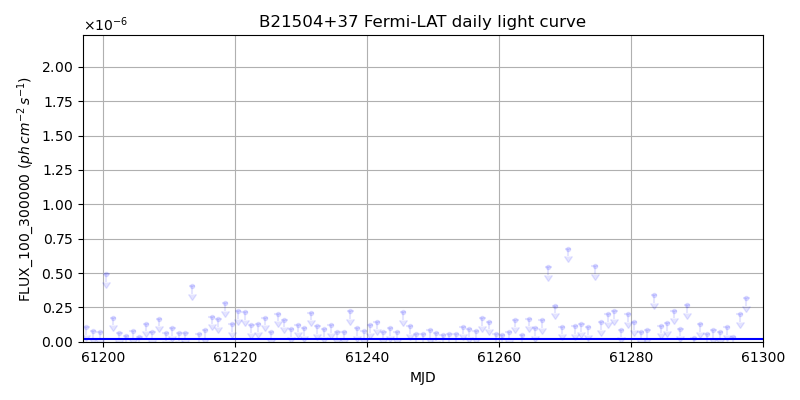
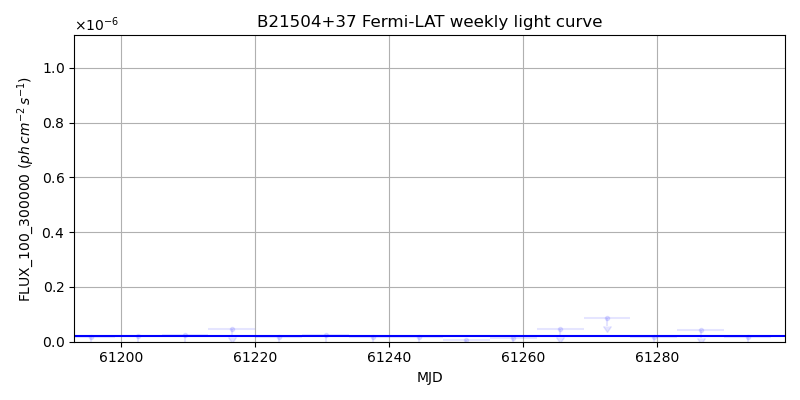
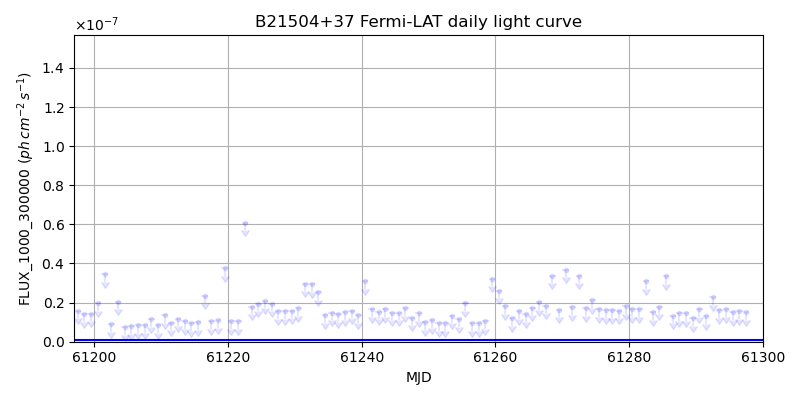
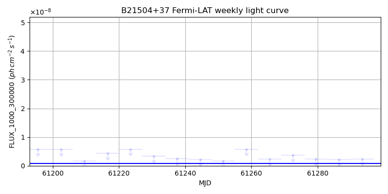

LAT Lightcurve site: https://fermi.gsfc.nasa.gov/ssc/data/access/lat/msl_lc/source/B2_1504p37
NED: Query
Time of last update of this page: UT: 2026-09-15 15:20 (MJD: 61298.639)
| Property | Value |
|---|---|
| R.A. | 15:06:09.60 |
| Dec. | 37:30:50.4 |
| z | 0.671 |
| 3FGL SpectrumType | PowerLaw |
| 3FGL PL Index | 2.45 |
| 3FGL Flux_100_300000 | 2.17e-08 1 / (s cm2) |
| 3FGL Flux_1000_300000 | 7.65e-10 1 / (s cm2) |
| 3FGL Flux >200 GeV | 3.47e-13 1 / (s cm2) |
| 3FGL Extrap. Crab >200 GeV | 0.00 |
| 3FGL Flux After EBL Absorption >200GeV | 2.53e-14 1 / (s cm2) |
| 3FGL EBL Crab Fraction >200GeV | 0.00 |

| MJD | dMJD | Flux | dFlux | Frac3FGL | FracCrab>200GeV | EBLFracCrab>200GeV |
|---|---|---|---|---|---|---|
| 61293.50 | 0.50 | 7.42e-08 | 0.00e+00 | 0.00 | 0.00 | 0.00 |
| 61294.50 | 0.50 | 1.07e-07 | 0.00e+00 | 0.00 | 0.00 | 0.00 |
| 61295.50 | 0.50 | 3.34e-08 | 0.00e+00 | 0.00 | 0.00 | 0.00 |
| 61296.50 | 0.50 | 1.98e-07 | 0.00e+00 | 0.00 | 0.00 | 0.00 |
| 61297.50 | 0.50 | 3.18e-07 | 0.00e+00 | 0.00 | 0.00 | 0.00 |

| MJD | dMJD | Flux | dFlux | Frac3FGL | FracCrab>200GeV | EBLFracCrab>200GeV |
|---|---|---|---|---|---|---|
| 61265.50 | 3.50 | 4.56e-08 | 0.00e+00 | 0.00 | 0.00 | 0.00 |
| 61272.50 | 3.50 | 8.49e-08 | 0.00e+00 | 0.00 | 0.00 | 0.00 |
| 61279.50 | 3.50 | 1.82e-08 | 0.00e+00 | 0.00 | 0.00 | 0.00 |
| 61286.50 | 3.50 | 4.23e-08 | 0.00e+00 | 0.00 | 0.00 | 0.00 |
| 61293.50 | 3.50 | 1.87e-08 | 0.00e+00 | 0.00 | 0.00 | 0.00 |

| MJD | dMJD | Flux | dFlux | Frac3FGL | FracCrab>200GeV | EBLFracCrab>200GeV |
|---|---|---|---|---|---|---|
| 61293.50 | 0.50 | 1.62e-08 | 0.00e+00 | 0.00 | 0.00 | 0.00 |
| 61294.50 | 0.50 | 1.65e-08 | 0.00e+00 | 0.00 | 0.00 | 0.00 |
| 61295.50 | 0.50 | 1.51e-08 | 0.00e+00 | 0.00 | 0.00 | 0.00 |
| 61296.50 | 0.50 | 1.55e-08 | 0.00e+00 | 0.00 | 0.00 | 0.00 |
| 61297.50 | 0.50 | 1.53e-08 | 0.00e+00 | 0.00 | 0.00 | 0.00 |

| MJD | dMJD | Flux | dFlux | Frac3FGL | FracCrab>200GeV | EBLFracCrab>200GeV |
|---|---|---|---|---|---|---|
| 61265.50 | 3.50 | 2.24e-09 | 0.00e+00 | 0.00 | 0.00 | 0.00 |
| 61272.50 | 3.50 | 3.69e-09 | 0.00e+00 | 0.00 | 0.00 | 0.00 |
| 61279.50 | 3.50 | 2.32e-09 | 0.00e+00 | 0.00 | 0.00 | 0.00 |
| 61286.50 | 3.50 | 2.16e-09 | 0.00e+00 | 0.00 | 0.00 | 0.00 |
| 61293.50 | 3.50 | 2.35e-09 | 0.00e+00 | 0.00 | 0.00 | 0.00 |
--------------------------------------------------------- Using user-supplied coords: 15:06:09.60 37:30:50.4 2000 --------------------------------------------------------- FLWO UT night of: 2026-09-16 Local Sid. @ Midnight: 23:17 Sunset (-15.0) (local, UT): 19:37 02:37 Sunrise (-15.0) (local, UT): 05:01 12:01 Moonrise (local, UT): Moonset (local, UT): 20:59 03:59 Moon phase: 0.27 --------------------------------------------------------- AzTime LSID UT Obj_el Obj_az Mn_el Mn_az Sep. --------------------------------------------------------- 19:37 18:53 02:37 43.8 293.4 13.4 230.2 61.6 20:07 19:23 03:07 38.0 295.1 8.5 234.7 61.6 20:37 19:53 03:37 32.3 297.1 3.4 238.9 61.6 21:07 20:23 04:07 26.6 299.3 -1.3 242.7 61.7 21:37 20:53 04:37 21.1 301.8 -7.8 246.3 61.7 22:07 21:23 05:07 15.8 304.6 -13.6 249.6 61.7 22:37 21:53 05:37 10.6 307.7 -19.4 252.8 61.8 23:07 22:23 06:07 5.7 311.1 -25.4 255.9 61.8 23:37 22:53 06:37 1.3 314.8 -31.4 259.0 61.9 00:07 23:23 07:07 -2.1 318.8 -37.4 262.0 61.9 00:37 23:53 07:37 -7.5 323.3 -43.5 265.2 62.0 01:07 00:24 08:07 -11.1 328.1 -49.6 268.6 62.0 01:37 00:54 08:37 -14.2 333.3 -55.7 272.3 62.1 02:07 01:24 09:07 -16.8 338.9 -61.8 276.8 62.1 02:37 01:54 09:37 -18.8 344.8 -67.8 282.7 62.2 03:07 02:24 10:07 -20.2 351.0 -73.7 291.5 62.3 03:37 02:54 10:37 -20.8 357.3 -79.0 307.4 62.4 04:07 03:24 11:07 -20.8 3.7 -82.7 342.4 62.5 04:37 03:54 11:37 -20.0 10.0 -81.9 32.3 62.6 05:01 04:19 12:01 -18.9 15.0 -78.4 56.3 62.6 --------------------------------------------------------- Dark hours >55 deg.: 0.00